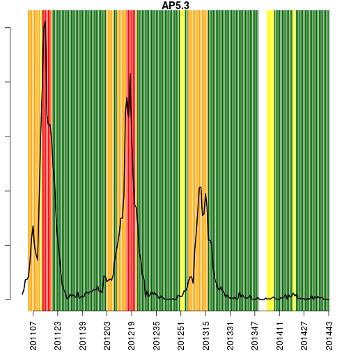

Projeto Alerta Dengue

Objetivos
- Desenvolver um sistema de detecção precoce de surtos de Dengue e alertas, utilizando dados híbridos de Redes Sociais, Monitoramento Entomológico, Epidemiológico e Climático.
- Desenvolver um protocolo de aquisição e processamento de dados que gere indicadores em tempo rápido.
- Desenvolver um ambiente computacional que possa ser facilmente incorporado na rotina das equipes responsáveis pela vigilância da Dengue.
- Aplicar esse modelo a várias cidades, respeitando as especificidades de cada uma. A princípio: Rio de Janeiro, Belo Horizonte e Curitiba.
Confira o Alerta Rio de Janeiro
Apresentações